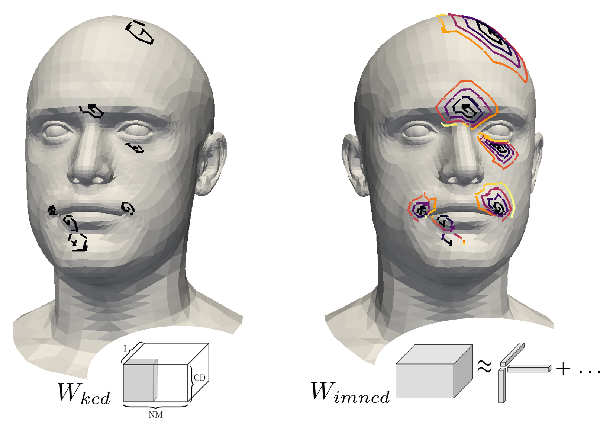
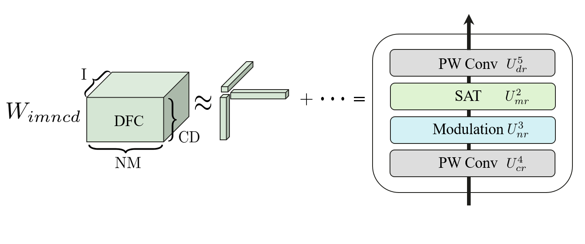
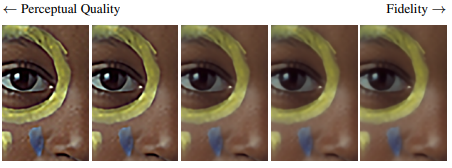
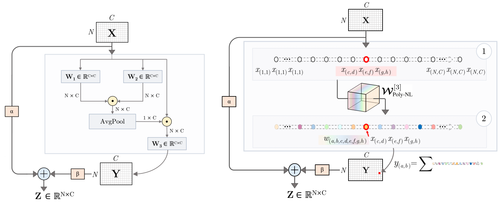
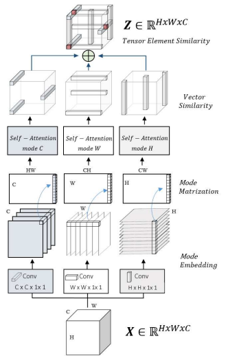
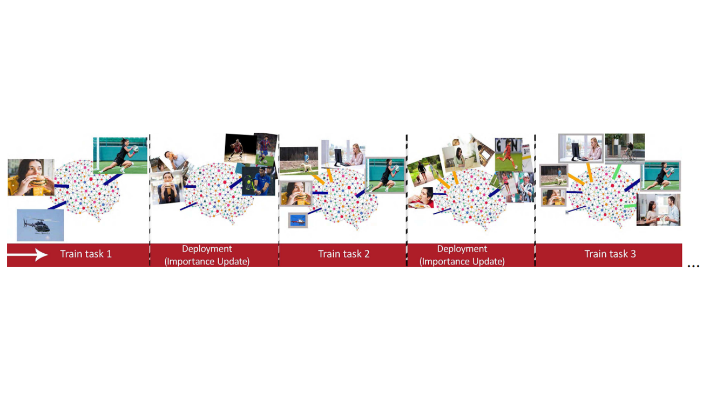

I’m a PHD student at Imperial College London in 3D Computer Vision and Deep Generative Models advised by Stefanos Zafeiriou. I’m also a Research Scientist at Huawei Noah's Ark, working with Jiankang Deng. My current interests lie in the intersection of generative models and 3D avatars, with particular emphasis on 3D Hands, Faces and Bodies. I received received the master’s degree from the University of Rome la Sapienza.
News
- Feb 2024 Three papers accepted at CVPR 2024.
- Mar 2023 Our workshop on NeRFs got accepted at ICCV 2023. work
- Mar 2022 Handy got accepted at CVPR 2023.
...show all...

Adaptive Spiral Layers for Efficient 3D Representation Learning on Meshes
Francesca Babiloni, Matteo Maggioni, Thomas Tanay, Jiankang Deng, Ales Leonardis, Stefanos Zafeiriou
IEEE/CVF International Conference on Computer Vision (ICCV), 2023
@inproceedings{inproceedings,
author = {Babiloni, Francesca and Maggioni, Matteo and Tanay, Thomas and Deng, Jiankang and Leonardis, Ales and Zafeiriou, Stefanos},
year = {2023},
month = {10},
pages = {14574-14585},
title = {Adaptive Spiral Layers for Efficient 3D Representation Learning on Meshes},
doi = {10.1109/ICCV51070.2023.01344}
}
Copy

Factorized Dynamic Fully-Connected Layers for Neural Networks
Francesca Babiloni, Francesca Babiloni, Thomas Tanay, Jiankang Deng, Matteo Maggioni, Stefanos Zafeiriou
IEEE/CVF International Conference on Computer Vision Workshops (ICCVW), 2023
@InProceedings{Babiloni_2023_ICCV,
author = {Babiloni, Francesca and Tanay, Thomas and Deng, Jiankang and Maggioni, Matteo and Zafeiriou, Stefanos},
title = {Factorized Dynamic Fully-Connected Layers for Neural Networks},
booktitle = {Proceedings of the IEEE/CVF International Conference on Computer Vision (ICCV) Workshops},
month = {October},
year = {2023},
pages = {1374-1383}
}
Copy

Tunable Convolutions With Parametric Multi-Loss Optimization
Matteo Maggioni, Thomas Tanay, Francesca Babiloni, Steven McDonagh, Aleš Leonardis
IEEE/CVF Conference on Computer Vision and Pattern Recognition (CVPR), 2023
@InProceedings{Maggioni_2023_CVPR,
author = {Maggioni, Matteo and Tanay, Thomas and Babiloni, Francesca and McDonagh, Steven and Leonardis, Ale\v{s}},
title = {Tunable Convolutions With Parametric Multi-Loss Optimization},
booktitle = {Proceedings of the IEEE/CVF Conference on Computer Vision and Pattern Recognition (CVPR)},
month = {June},
year = {2023},
pages = {20226-20236}
}
Copy

Poly-NL: Linear Complexity Non-Local Layers With 3rd Order Polynomials
Francesca Babiloni, Ioannis Marras, Filippos Kokkinos, Jiankang Deng, Grigorios Chrysos, Stefanos Zafeiriou
IEEE/CVF International Conference on Computer Vision (ICCV), 2021
@INPROCEEDINGS{9710134,
author={Babiloni, Francesca and Marras, Ioannis and Kokkinos, Filippos and Deng, Jiankang and Chrysos, Grigorios and Zafeiriou, Stefanos},
booktitle={2021 IEEE/CVF International Conference on Computer Vision (ICCV)},
title={Poly-NL: Linear Complexity Non-local Layers With 3rd Order Polynomials},
year={2021},
volume={},
number={},
pages={10498-10508},
keywords={Image segmentation;Image recognition;Limiting;Complexity theory;Face detection;Convolutional neural networks;Task analysis;Representation learning;Computational photography;Faces},
doi={10.1109/ICCV48922.2021.01035}}
Copy

TESA: Tensor Element Self-Attention via Matricization
Francesca Babiloni, Ioannis Marras, Gregory Slabaugh, Stefanos Zafeiriou
IEEE/CVF Conference on Computer Vision and Pattern Recognition (CVPR) 2020
@InProceedings{Babiloni_2020_CVPR,
author = {Babiloni, Francesca and Marras, Ioannis and Slabaugh, Gregory and Zafeiriou, Stefanos},
title = {TESA: Tensor Element Self-Attention via Matricization},
booktitle = {Proceedings of the IEEE/CVF Conference on Computer Vision and Pattern Recognition (CVPR)},
month = {June},
year = {2020}
}
Copy

Memory Aware Synapses: Learning what (not) to forget
Rahaf Aljundi, Francesca Babiloni, Mohamed Elhoseiny, Marcus Rohrbach, Tinne Tuytelaars
European Conference on Computer Vision (ECCV) 2018
@InProceedings{Aljundi_2018_ECCV,
author = {Aljundi, Rahaf and Babiloni, Francesca and Elhoseiny, Mohamed and Rohrbach, Marcus and Tuytelaars, Tinne},
title = {Memory Aware Synapses: Learning what (not) to forget },
booktitle = {Proceedings of the European Conference on Computer Vision (ECCV)},
month = {September},
year = {2018}
}
Copy